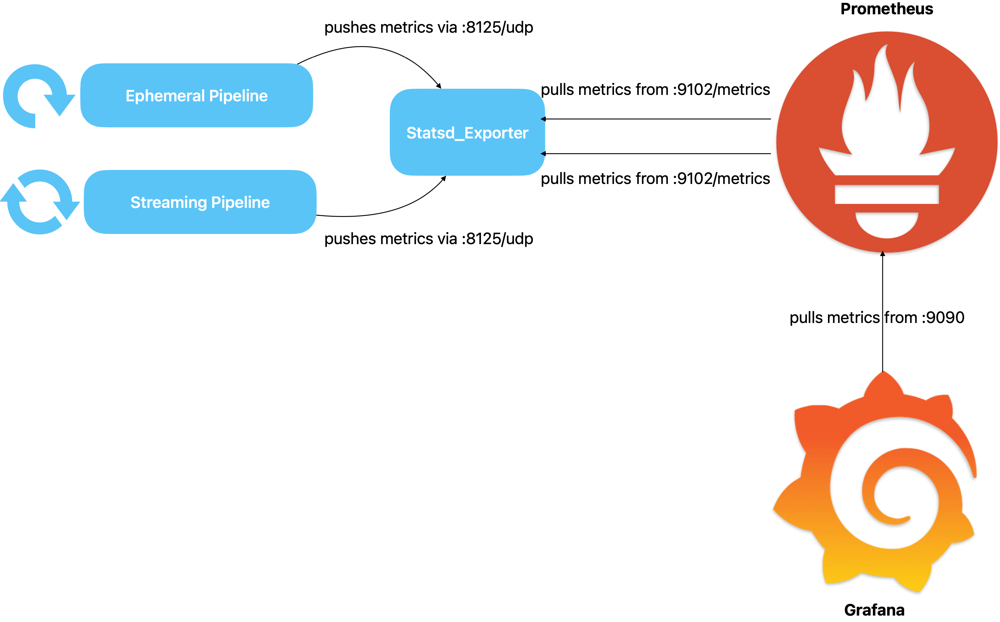
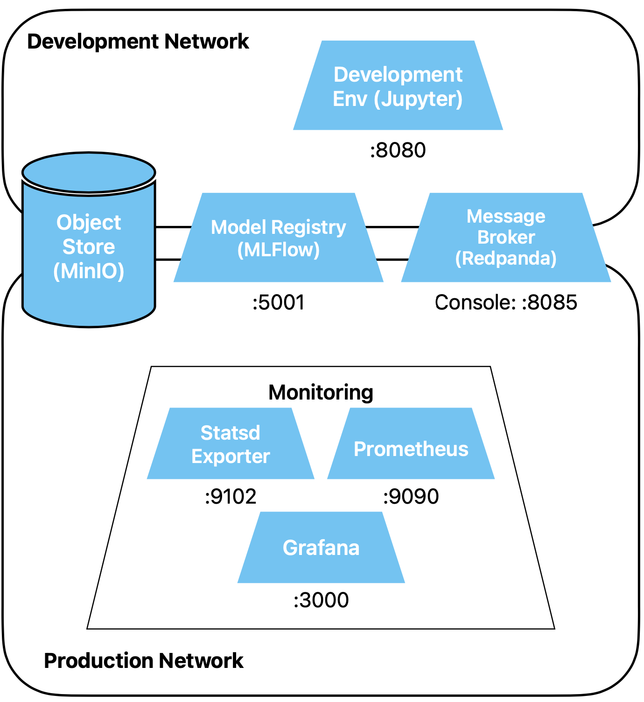

Drift Detection Infrastructure
Diese Tools werden bereits von vielen Organisationen für das Sammeln von Metriken, das
Darstellen deren Verlauf und für die Alarmierung verwendet.
Vorbereitung
Speichere alle deine offenen Notebooks. Stoppe alle Container, indem du dich ins Top-Level
Verzeichnis der Übungen begibst (dort, wo das File docker-compose.yml liegt) und
docker compose down ausführst. Wenn du die Container im Vordergrund laufen hast, kannst
du in diesem Terminal die Prozesse mit ctrl-c stoppen.
Kommentiere im Top-Level Compose File docker-compose.yml den Monitoring Dienst ein.
Starte alle Container wieder.
Übungen
Architektur
Wir werden die folgenden Architektur aufsetzen:

Dabei ist es wichtig, den Einsatzzweck der einzelnen Komponenten zu verstehen.
- Prometheus: Sammelt und speichert Datenpunkte und bietet mit PromQL
eine eigene Sprache, um diese zu analysieren. Prometheus pullt Metriken immer aktiv, was
schön ist für Services, welche dann ihre Metriken einfach auf einer Webseite in dem von
Prometheus vorgegebenen Format anbieten können.
- Grafana: Holt Daten von verschiedenen Quellen und stellt diese grafisch
dar. Kann Alarme aussenden.
- Unsere Batch- und Streaming Pipelines: Berechnen und pushen Metriken
aktiv.
- Statsd Exporter: Nimmt von den Pipelines Metriken im Statsd Format
entgegen und stellt für Prometheus einen entsprechende Endpoint zum Pullen zur
Verfügung.
Das Statsd Format ist ein gängiges Format zum Loggen von Metriken. Der Statsd_Exporter übersetzt
von diesem Format in ein für Prometheus verständliches Format.
Wieso kann auf die Funktionalität des Statsd_Exporters nicht verzichtet werden?
Lösungsvorschlag
Hätten wir nur Streaming-Pipelines, könnte theoretisch auf die Funktionalität des
Statsd_Exporters verzichtet werden. Die Pipelines könnten selber für das Polling von
Prometheus einen entsprechenden Endpoint zur Verfügung stellen, da sie ja konstant
laufen.
Bei Batch-Pipelines, welche periodisch gestartet werden, durchlaufen und sich dann
beenden, braucht es die Funktionalität des Statsd_Exporters hingegen zwingend.
Statsd Service
Schau dir das compose file der Monitoring Dienste an. Via welchen Port kannst du von ausserhalb
Docker auf Statsd zugreifen?
Lösungsvorschlag
Von ausserhalb Docker kannst du via den Port 9102 zugreifen.
Nun schau dir das Mapping File an. Welche vier Informationen geben wir mit, wenn unsere Pipeline
eine Drift Metrik loggt?
Lösungsvorschlag
Die Information findest du im file
prometheus_config/statsd_metrics-mapping.yml. Wir geben den Namen des Datensets
mit, für welches wir den Drift berechnen (dataset_name), dessen
Version (dataset_version), den Spaltennamen, um welchen es geht (column_name) sowie die
Bezeichnung der Metrik, welche wir berechnen (metric_name).
Greife nun auf die Seite der Metriken zu, welche der Statsd_Exporter für Prometheus zur
Verfügung stellt. Dazu öffnest du in Codespaces die Webseite des Statsd-Sevices (Port 9102) und
fügst die URL /metrics an. Du siehst bereits viel Text, ohne dass wir schon etwas
geloggt hätten. Was könnte dieser bedeuten?
Lösungsvorschlag
Es handelt sich um Metriken, welche der Statsd_Exporter über sich selber zur Verfügung
stellt, damit er als Service überwacht werden kann.
Der Exporter liest jeden empfangenen String, und wenn dieser in eines der definierten Mappings
passt, erscheint der (aktualisierte) Wert auf der /metrics Webseite und kann von
Prometheus gepollt werden.
Wie muss ein gültiger String aussehen, der eine unserer Drift Metriken definiert?
Lösungsvorschlag
Die match direktive aus dem Mappings File zeigt das Muster mit vier Platzhalter
an:
match: "drift_metrics.*.*.*.*"
Für die * können beliebige Werte einfügen, z.B.
drift_metrics.mushroom.v1.cap-diameter.wasserstein
Der eigentliche Wert wird, abgetrennt durch einen Doppelpunkt angehängt. Danach folgt,
abgetrennt durch eine Pipe, der Typ der Metrik. Welche Typen es gibt, sehen wir später.
drift_metrics.mushroom.v1.cap-diameter.wasserstein:42|g
Die vier labels werden für die Umformatierung ins Prometheus Format verwendet.
Versuche nun testweise, den Wert einer Metrik an den Statsd_Exporter zu schicken. Dazu musst du
den obigen String via UDP an den Port 8125 schicken. Am einfachsten geht dies via
netcat. Da der Port aber nicht nach
ausserhalb des Docker-Netzwerkes gemappt ist (nur
expose und nicht
ports im
compose file), und netcat möglicherweise nicht auf dem Host (dem gestarteten codespace)
installiert ist, verwendest du ein Docker Image. Führe den folgenden Befehl aus:
docker run -i --rm --network=production --name netcat_test subfuzion/netcat -u statsd 8125
Netcat wartet auf eine Eingabe (kein Prompt sichtbar), du pastest den folgenden String von oben
und drückst Enter.
drift_metrics.mushroom.v1.cap-diameter.wasserstein:42|g
Nun gehe noch einmal auf die StatsD-Webseite. Die Metrik müsste nun mit dem Wert 42 sichtbar
sein (wahrscheinlich oben an der Seite):
drift_metrics{column_name="cap-diameter",dataset_name="mushroom",dataset_version="v1",metric_name="wasserstein"} 42
Wir sehen, dass der Exporter die Angaben aus dem Mappings File verwendet hat, um die erhaltene
Metrik für Prometheus umzuformatieren.
Den noch laufenden netcat Container kannst du mittels docker stop netcat_test stoppen.
Prometheus Service
Schau dir nun das Config File von Prometheus an. Was siehst du?
Lösungsvorschlag
Es sind zwei Jobs definiert, Prometheus sammelt also Daten von zweien Services.
Einerseits von sich selbst, und andererseits unsere Drift Metriken via Statsd.
Eigentlich sollte noch eine dritte Quelle vorhanden sein, nämlich die Metriken des
Statsd_Exporters selber. Diese haben wir der Einfachheit halber ausgelassen.
Öffne nun die Webseite des Prometheus Services (Port 9090). Versuche, die vorher testweise
geloggte Drift Metrik sowie Metriken zu Prometheus selber anzuzeigen.
Lösungsvorschlag
Du kannst dazu im Query-Fenster beispielsweise drift_metrics eingeben und
Execute drücken. Auto-Complete funktioniert auch.
Zeige nun noch via das Status Menu die konfigurierten Targets an. Du siehst die im Config File
definierten Targets, prometheus und dataset_metrics.
Grafana
Nun greife auf den Grafana Service (Port 3000) zu. Erstelle als erstes eine Data Source für
Prometheus.
Lösungsvorschlag
- Klicke im Sidebar links auf Connections -> Data sources und dann auf
Add new data source oben rechts.
- Suche und wähle Prometheus
- Setze unter Connections die Prometheus server URL auf
http://prometheus:9090
- Klicke ganz unten auf Save & test, es sollte eine grüne Erfolgsmeldung
Meldung erscheinen
Als nächstes erstellst du ein neues Dashboard und fügst diesem eine Visualisierung hinzu. Baue
dir eine Visualisierung, welche die Drift Metrik auf eine einfache Weise anzeigt. Du wirst noch
nicht viel sehen können, denn du hast erst einen einzigen Datenpunkt, den vom obigen Test. Du
kannst das Dashboard dann später ausbauen, wenn wir mehr Daten haben.
Lösungsvorschlag
- Dashboards -> New
- Add visualization
- Prometheus auswählen
- Unter Metric im Select metric dropdown drift_metrics
wählen
- Button Run queries betätigen
Im Panel sieht man nun einen kleinen Punkt oder Strich und in der Legende eine lange
Zeile. Dieses
automatisch generierte Label ist etwas unleserlich. Unter Options können wir
das anpassen: Legend = Custom, statt = {{label_name}} setzen wir
{{column_name}}.
Nun noch rechts oben einen Panel Title setzen und Save klicken und Dashboard
benennen.
Wenn du möchtest, kannst du nun in Prometheus noch Grafana selber als Quelle hinzufügen, damit
wir auch den Grafana Dienst überwachen können :-)
Architekturübersicht
Unsere erweiterte Architektur (ohne Pipelines) sieht nun so aus.
